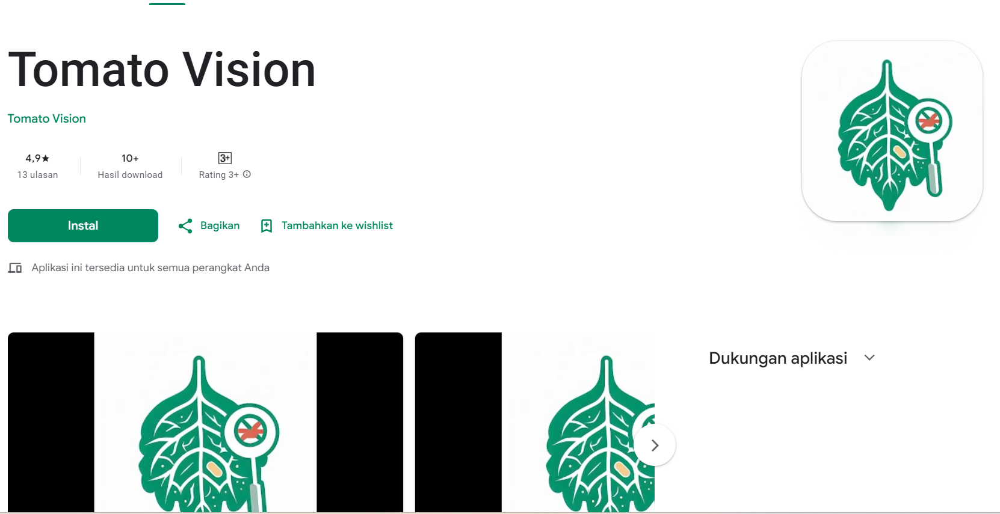
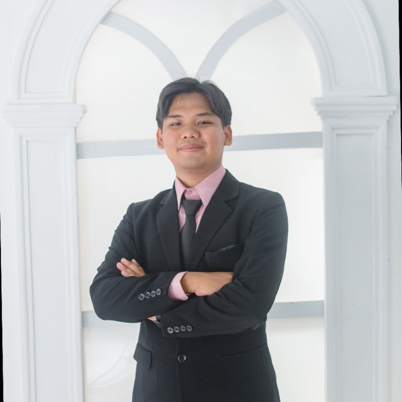
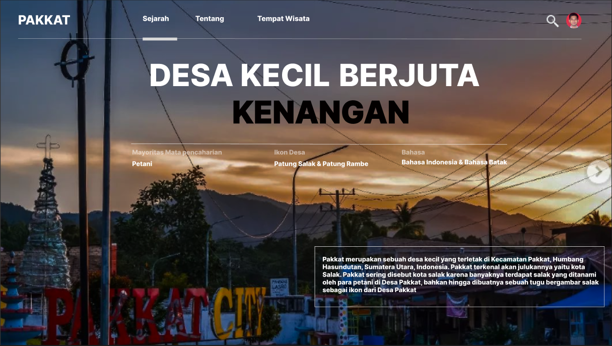

Computer Vision
Tomato Vision
YOLOv5 agriculture disease detection for mobile deployment.
Hello, I'm Kevin
Building LLM research, automation systems, and applied AI products with a practical engineering focus.

Selected Work
Featured Research
Co-authored TOBA-LM research for Indonesian, Batak, and Minangkabau language modeling with adaptive memory and tokenization experiments.

Computer Vision
YOLOv5 agriculture disease detection for mobile deployment.

Automation
Automation and data-backed systems for professional AI engineering work.

Web System
Public information system from early software engineering work.
Experience & Education
LLM research, workflow automation, and data-backed AI systems.
Co-authored low-resource language modeling research.
Machine learning cohort and applied model training foundation.
Universitas Udayana.
Yayasan Karya Salemba Empat scholarship awardee.
Funded computer vision project for agriculture disease detection.
Capabilities